Atención empresarial
Soluciones técnicas para la industria, comercios y grandes operaciones.
Soluciones técnicas de alto nivel para la industria, comercios y operaciones especializadas. Tecnología de última generación y cobertura nacional.
Ver Servicios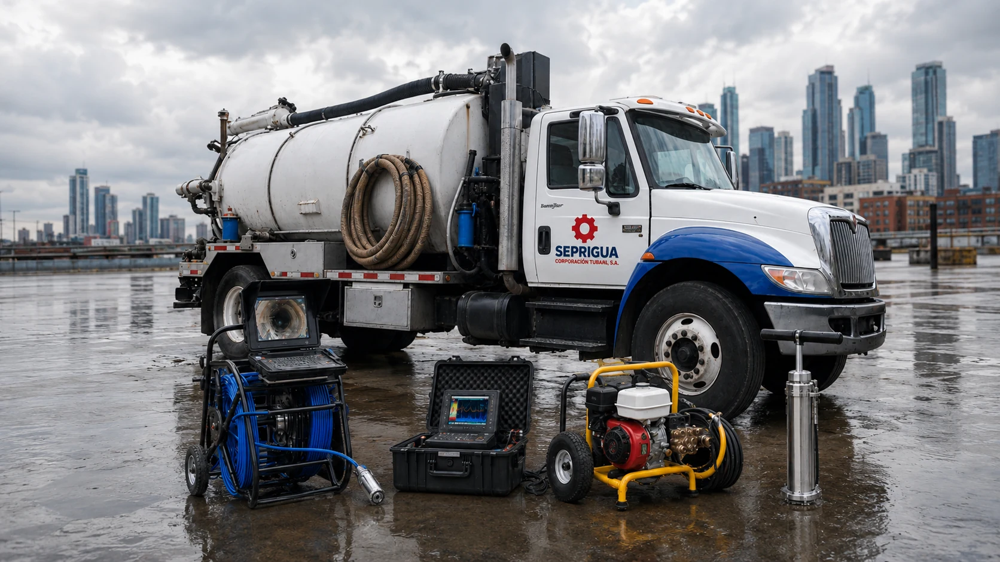
Soluciones técnicas para la industria, comercios y grandes operaciones.
Diagnósticos precisos con tecnología avanzada para tuberías y drenajes.
Presencia y capacidad operativa en todo el territorio de Guatemala.
Equipo altamente capacitado para garantizar seguridad, eficiencia y calidad.
En SEPRIGUA brindamos soluciones técnicas especializadas en mantenimiento industrial, drenajes, inspección y limpieza técnica en Guatemala.
Combinamos tecnología de última generación, personal altamente calificado y cobertura nacional para garantizar seguridad, eficiencia y continuidad operativa en cada trabajo.
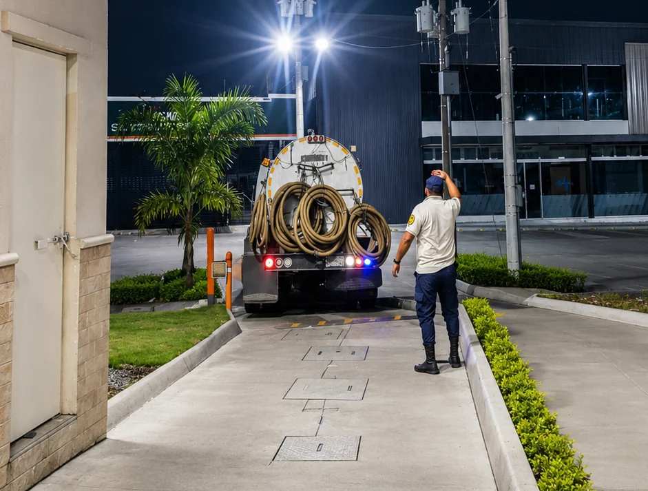
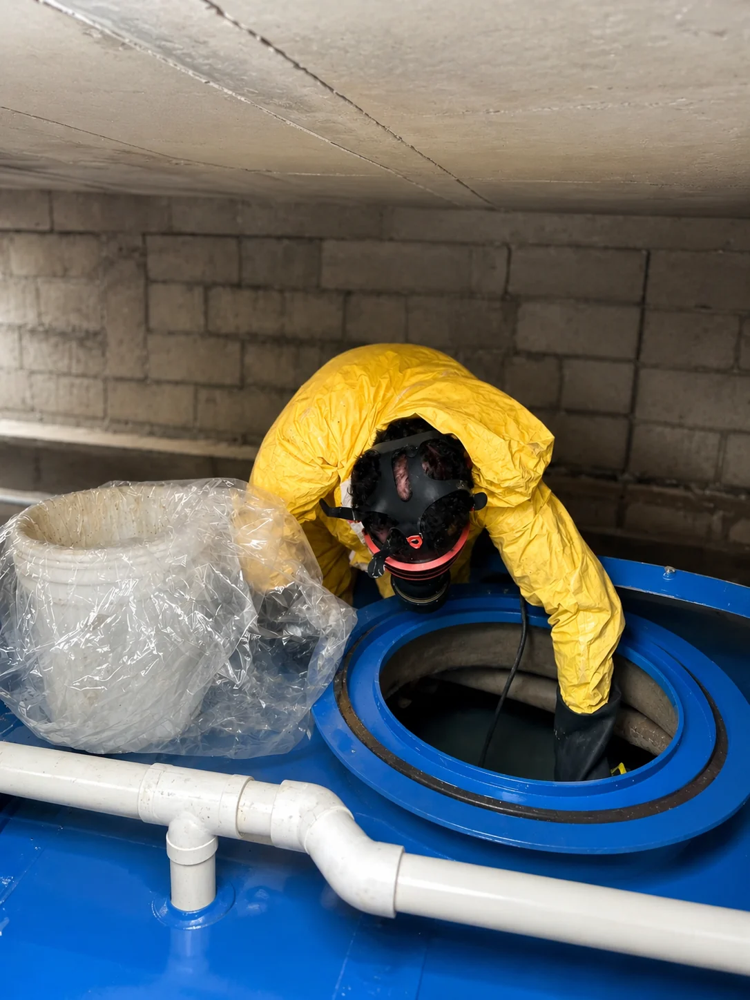
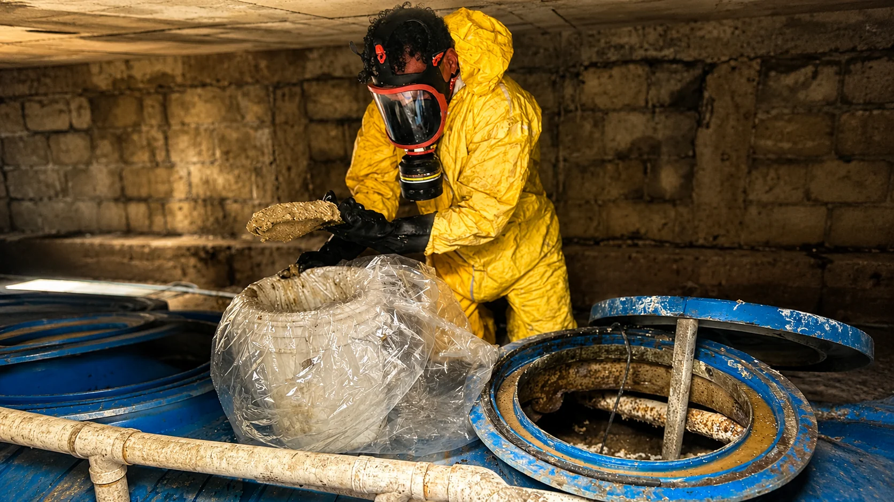
Años de experiencia
Trabajos completados
Equipos especializados
Incidentes comprometidos
Brindar servicios especializados de limpieza, inspección y mantenimiento de sistemas de drenajes y alcantarillados, mediante personal comprometido y equipo adecuado, ofreciendo soluciones eficientes, responsables y de calidad.
Superar las expectativas de nuestros clientes con un servicio ágil, responsable y de la más alta calidad, contribuyendo al desarrollo industrial y empresarial de Guatemala.
En SEPRIGUA ofrecemos soluciones especializadas para drenajes,
inspección, limpieza y mantenimiento industrial en Guatemala.
Nuestro compromiso es brindar atención profesional, cobertura
nacional y soluciones efectivas para empresas de todos los sectores.
Limpieza y desobstrucción de drenajes sanitarios, pluviales e industriales para asegurar un flujo óptimo y prevenir problemas mayores.
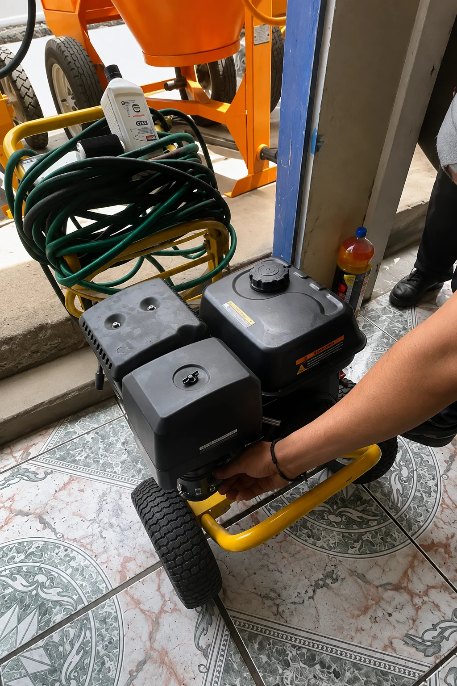
Cámaras especializadas para inspección interna de tuberías y desagües, permitiendo detectar obstrucciones, daños y filtraciones.
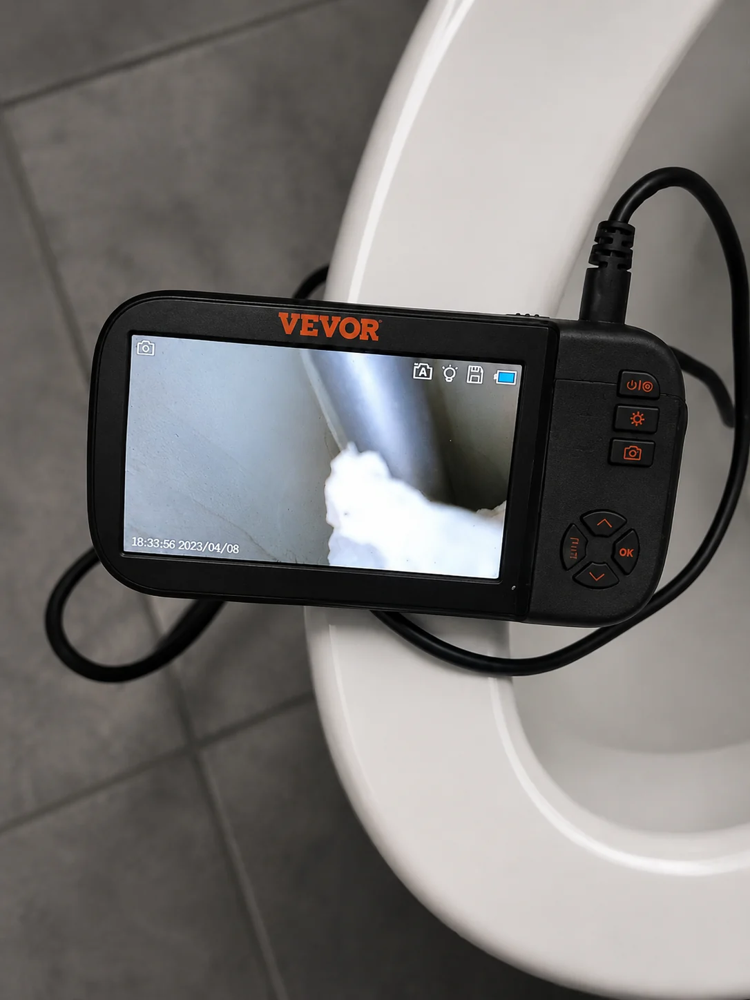
Extracción y transporte seguro de lodos, sedimentos y residuos líquidos con equipo especializado de alto rendimiento.
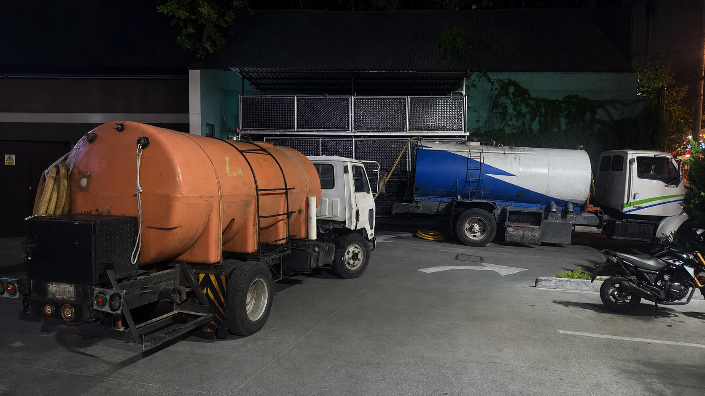
Limpieza profunda de trampas de grasa para mantener su eficiencia y cumplir con normativas sanitarias y ambientales.
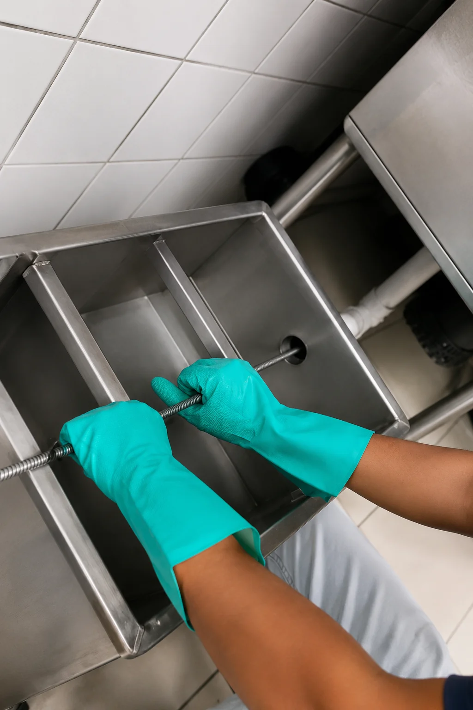
Soluciones integrales de mantenimiento preventivo y correctivo para sistemas e instalaciones industriales.
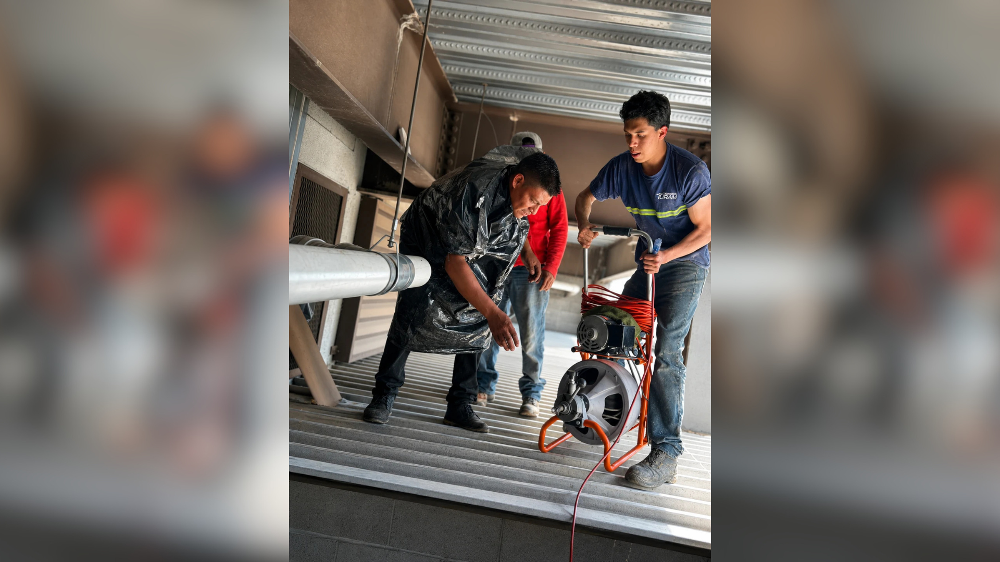
En SEPRIGUA brindamos soluciones profesionales a nivel nacional. Contamos con sede principal en Ciudad de Guatemala y presencia operativa en Quetzaltenango para cubrir eficientemente el occidente del país.
Centro de operaciones y administración.
Cobertura estratégica para la región occidental.
Atendemos trabajos en todo el país.

Hemos ejecutado cientos de trabajos profesionales de mantenimiento, limpieza e inspección en todo Guatemala, brindando soluciones confiables que garantizan resultados y tranquilidad.
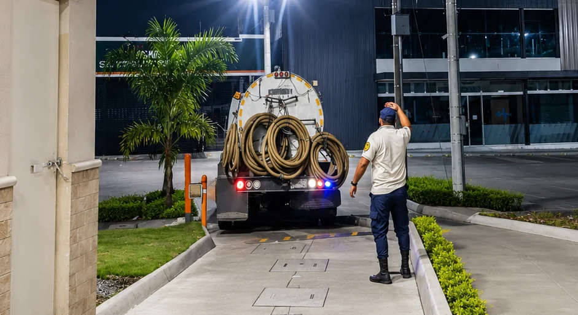
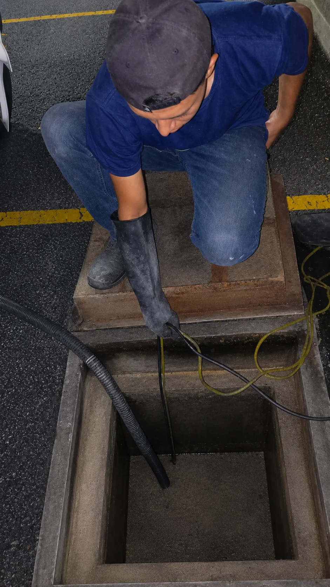
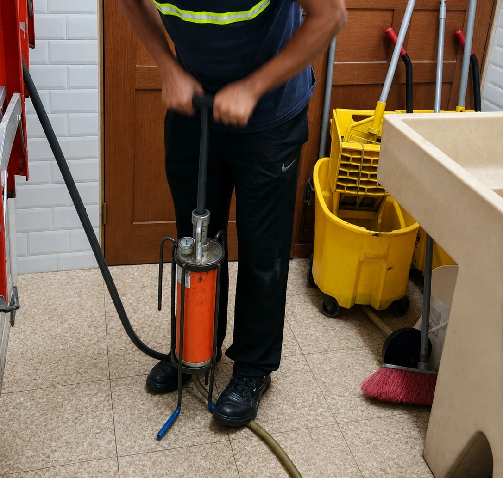
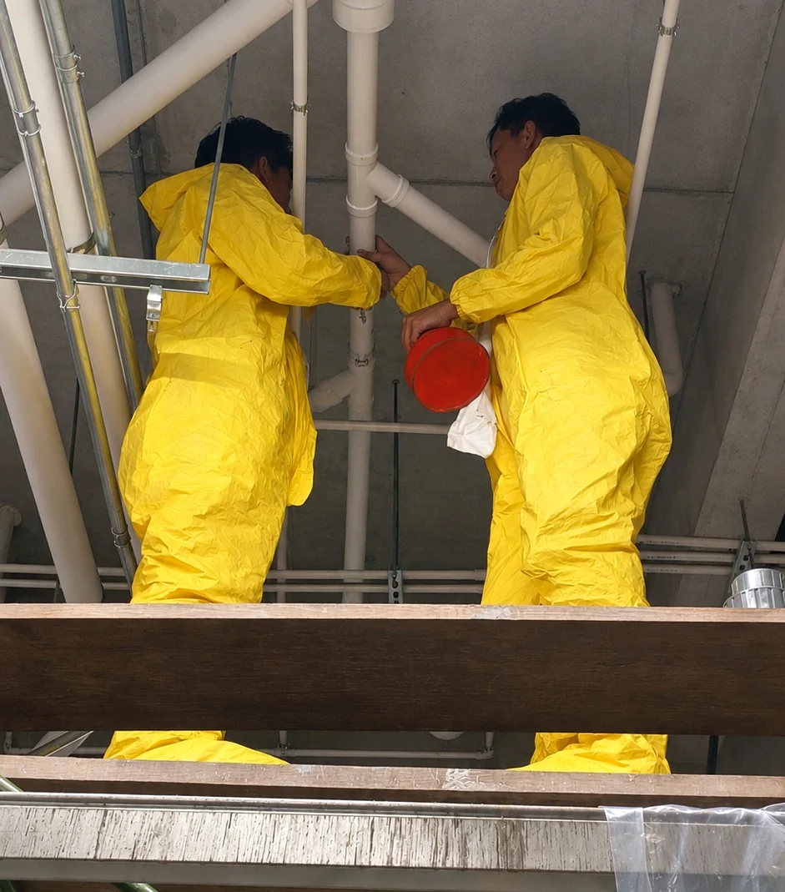
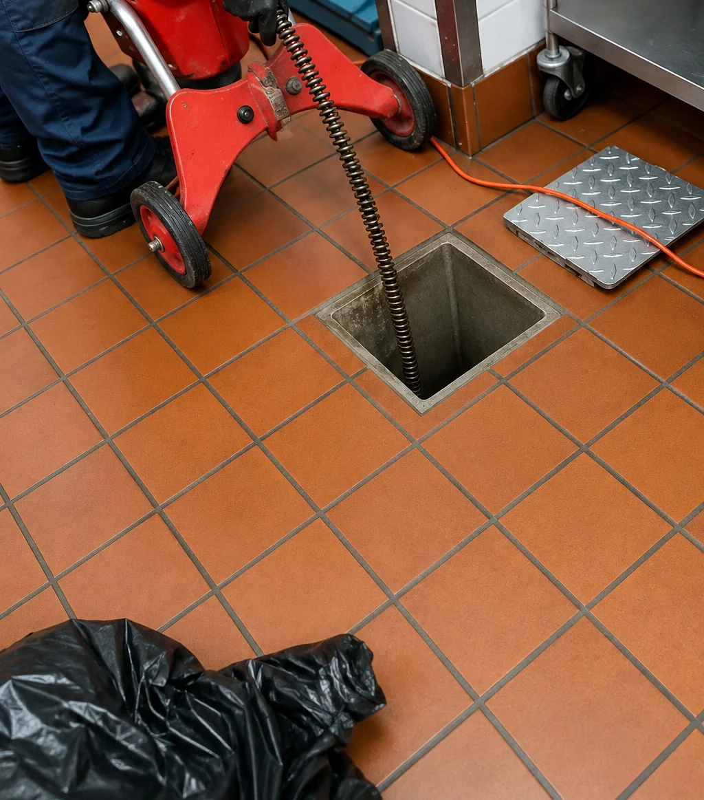
Cada proyecto se planifica para lograr máxima eficiencia y durabilidad.
Cumplimos con normativas y protocolos de seguridad en cada intervención.
Personal técnico altamente capacitado y maquinaria de última generación.
Atención rápida y eficiente para minimizar tiempos de inactividad.
Procesos controlados y estándares que garantizan trabajos confiables.
Trabajamos con prácticas responsables que cuidan del entorno.
Déjanos tus datos y uno de nuestros asesores se pondrá en contacto contigo para brindarte la mejor solución.